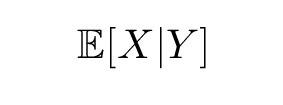
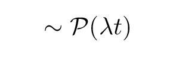

-
13 Gennaio 2022 Lo strano caso dell'aspettazione condizionataCosa succede se cerchiamo il valore atteso di una variabile aleatoria avendo un informazione aggiuntiva su un altra variabile aleatoria? Quali sono le proprietà di questo valore?
-
21 Gennaio 2022 Di chi è la colpa?Codizionando una variabile di Poisson con la somma di due variabili indipendenti sullo stesso intervallo otteniamo una distribuzione binomiale. Questo risponde alla domanda: "quanti arrivi sono dovuti alla prima variabile se ne conosciamo il numero totale?"